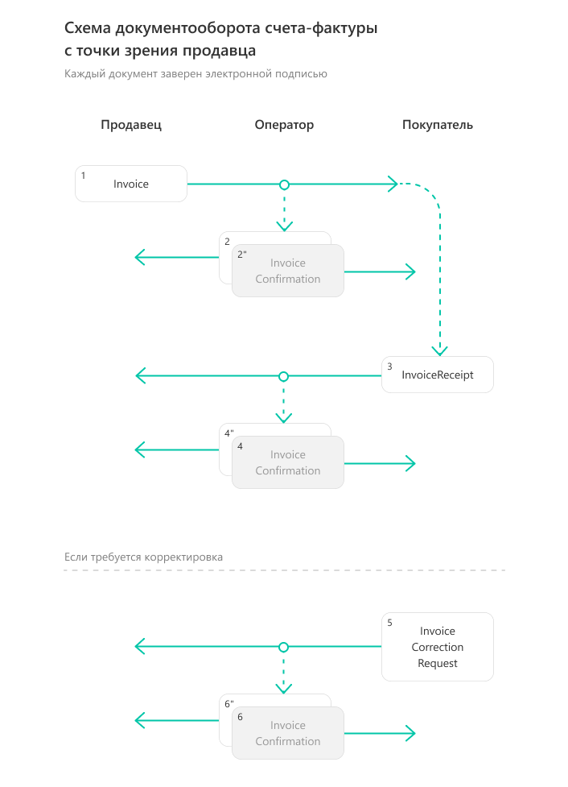
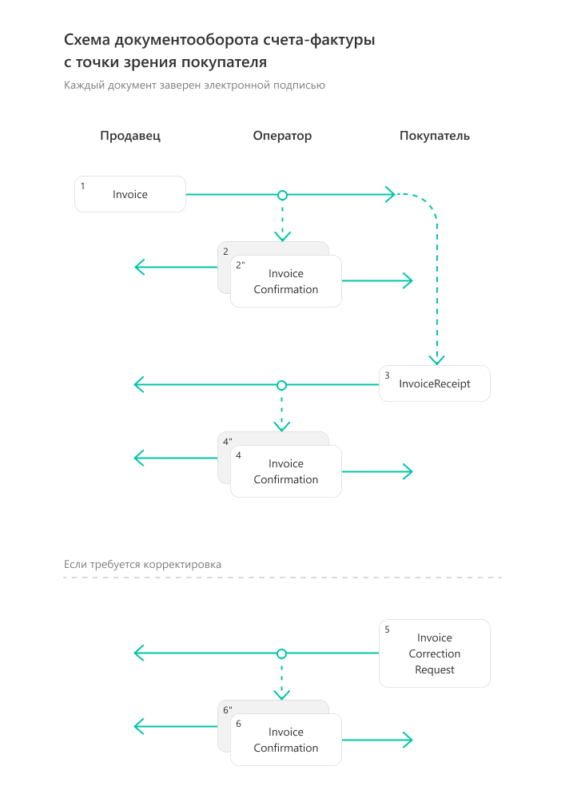
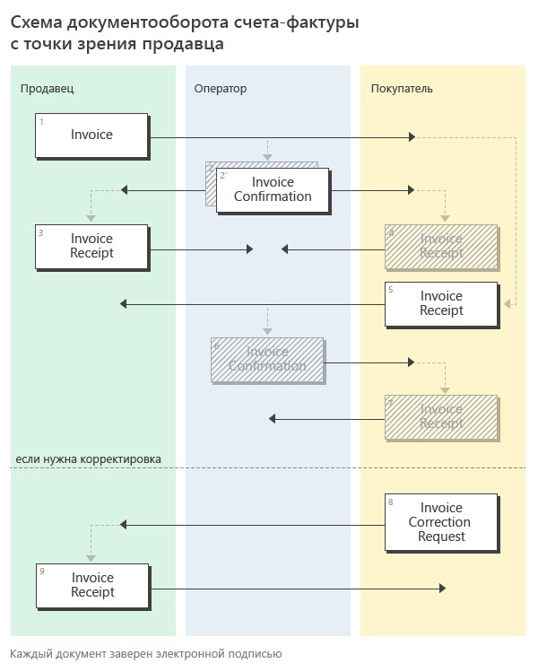
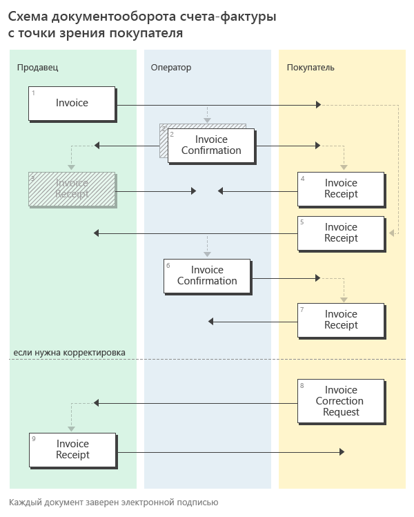

Документооборот счетов-фактур¶
Обмен электронными счетами-фактурами в России регулируется Министерством финансов РФ и Федеральной налоговой службой.
Порядок документооборота, связанного с выставлением и получением счетов-фактур в электронном виде с ЭП, утвержден приказом Минфина от 05.02.2021 N 14Н. До 01.07.2021 действовал порядок обмена счетов-фактур, определенный приказом Минфина от 10.11.2015 N 174Н.
Примечание
Порядок обмена электронными счетами-фактурами между компаниями через интернет описан здесь
Форматы¶
Электронные счета-фактуры можно создавать по формату, утвержденному приказом ФНС России от 19.12.2018 N ММВ-7-15/820@.
Корректировочные счета-фактуры можно создавать по форматам, утвержденным приказами ФНС России от 12.10.2020 N ЕД-7-26/736@, от 13.04.2016 N ММВ-7-15/189@ (действовал до 01.10.2021).
Форматы служебных документов, используемых при выставлении и получении счетов-фактур в электронном виде, утверждены приказом ФНС России от 30.01.2012 N ММВ-7-6/36@.
XSD-схемы счетов-фактур формата 820, корректировочных счетов-фактур форматов 189 и 736 могут быть получены с помощью ссылки, доступной в поле XsdUrl контракта DocumentTitle, в результате вызова метода GetDocumentTypes.
Для СФ и КСФ форматы электронных документов, возникающих в ходе реализации порядка обмена ЭСФ, описываются следующими XSD-схемами:
XSD-схема подтверждения оператора о дате отправки СФ/ИСФ/КСФ/ИКСФ(выдается Продавцу);XSD-схема подтверждения оператора о дате доставки СФ/ИСФ/КСФ/ИКСФ(выдается Покупателю);XSD-схема уведомления об уточнении СФ/ИСФ/КСФ/ИКСФ(формируется Покупателем).
Структуры¶
Для документов, возникающих в ходе документооборота счетов-фактур, в Диадоке зарезервированы специальные типы сущностей:
для счета-фактуры (СФ) - Attachment/Invoice,
для исправления СФ (ИСФ) - Attachment/InvoiceRevision,
для корректировки СФ (КСФ) Attachment/InvoiceCorrection,
для исправления корректировки СФ (ИКСФ) - Attachment/InvoiceCorrectionRevision.
Для служебных документов, возникающих в ходе реализации порядка обмена ЭСФ:
Attachment/InvoiceConfirmation (подтверждение оператора электронного документооборота на СФ/ИСФ/КСФ/ИКСФ, на извещение о получении СФ/ИСФ/КСФ/ИКСФ, на уведомление об уточнении СФ/ИСФ/КСФ/ИКСФ),
Attachment/InvoiceCorrectionRequest (уведомление об уточнении СФ/ИСФ/КСФ/ИКСФ),
Attachment/InvoiceReceipt (извещение о получении СФ/ИСФ/КСФ/ИКСФ, подтверждения оператора электронного документооборота, уведомления об уточнении СФ/ИСФ/КСФ/ИКСФ).
Порядок обмена¶
Счет-фактура и все множество служебных документов, предусмотренных порядком Минфина, помещаются в Диадоке в одно сообщение (в одну цепочку документооборота).
Добавление служебных документов к счету-фактуре по мере прохождения им различных этапов документооборота производится при помощи описанного механизма дополнений (см. описание модели данных).
Передача исправлений СФ, а также корректировочных СФ и исправлений КСФ с точки зрения API Диадока производится точно также, как и передача СФ.
Порядок обмена согласно приказу 14Н¶
Схема, приведенная ниже, демонстрирует порядок обмена счетами-фактурами, утвержденный приказом Минфина от 05.02.2021 N 14Н и реализованный в Диадоке:
Продавец формирует счет-фактуру Invoice1, подписывает его и направляет Покупателю.
Диадок формирует подтверждение оператора InvoiceConfirmation2 о дате получения счета-фактуры, подписывает его и направляет Продавцу.
Диадок формирует подтверждение оператора InvoiceConfirmation2“ о дате отправки счета-фактуры, подписывает его и направляет вместе со счетом фактурой Покупателю.
Покупатель получает счет-фактуру и подтверждение оператора и отправляет в ответ подписанное извещение InvoiceReceipt3о получении счета-фактуры.
Диадок формирует подтверждение оператора InvoiceConfirmation4 о дате получения извещения о получении счета-фактуры, подписывает его и направляет Покупателю.
Диадок формирует подтверждение оператора InvoiceConfirmation4“ о дате отправки извещения о получении счета-фактуры, подписывает его и направляет вместе с извещением о получении Продавцу.
Если Покупатель обнаружил ошибки в полученном счете-фактуре, он формирует уведомление об уточнении счета-фактуры InvoiceCorrectionRequest5, подписывает его и направляет Продавцу.
Диадок формирует подтверждение оператора InvoiceConfirmation6 о дате получения уведомления об уточнении счета-фактуры, подписывает его и направляет Покупателю.
Диадок формирует подтверждение оператора InvoiceConfirmation6“ о дате отправки уведомления об уточнении счета-фактуры, подписывает его и направляет вместе с уведомлением об уточнении счета-фактуры Продавцу.
На схемах ниже изображены структуры Диадок-сообщений в ящиках Продавца и Покупателя, представляющих один и тот же полностью завершенный документооборот (со всеми возможными служебными документами):
 Сущности - документы, относящиеся к документообороту одного счета-фактуры, в рамках Диадок-сообщения связываются между собой при помощи атрибутов ParentEntityId.
Например, у сущности InvoiceConfirmation2 поле ParentEntityId будет указывать на сущность Invoice1.
Также у сущности InvoiceCorrectionRequest5 поле ParentEntityId будет указывать на сущность Invoice1.
Если же мы рассмотрим сущности InvoiceConfirmation4 и InvoiceConfirmation4“, представляющие подтверждение оператора, отправленные Покупателю и Продавцу в ответ на извещение о получении счета-фактуры Покупателем, то у них поле ParentEntityId будет указывать на сущность InvoiceReceipt3, представляющую это извещение.
На схеме стрелками обозначаются связи типа ParentEntityId между сущностями. Сущности типа Signature, представляющие ЭП под документами (в соответствии с порядком Минфина все документы возникающие в ходе документооборота счетов-фактур должны сопровождаться ЭП), на схемах не изображены.
Порядок обмена согласно приказу 174Н¶
До 01.07.2021 порядок документооборота счетов-фактур определялся приказом Минфина от 10.11.2015 N 174Н.
Подробнее
Схема, приведенная ниже, демонстрирует порядок обмена счетами-фактурами согласно приказа 174Н:
Продавец формирует счет-фактуру Invoice1, подписывает его и направляет Покупателю.
Диадок формирует подтверждение оператора InvoiceConfirmation2 о дате получения счета-фактуры, подписывает его и направляет Продавцу.
Диадок формирует подтверждение оператора InvoiceConfirmation2“ о дате отправки счета-фактуры, подписывает его и направляет вместе со счетом фактурой Покупателю.
Продавец получает подтверждение оператора и отправляет в ответ подписанное извещение InvoiceReceipt3 о получении подтверждения.
Покупатель получает счет-фактуру и подтверждение оператора и отправляет в ответ подписанные извещение InvoiceReceipt5 о получении счета-фактуры и извещение InvoiceReceipt4 о получении подтверждения.
Диадок формирует подтверждение оператора InvoiceConfirmation6 о дате отправки извещения о получении счета-фактуры, подписывает его и направляет Покупателю.
Покупатель получает подтверждение оператора и отправляет в ответ подписанное извещение InvoiceReceipt7 о получении подтверждения.
Если Покупатель обнаружил ошибки в полученном счете-фактуре, он формирует уведомление об уточнении счета-фактуры InvoiceCorrectionRequest8, подписывает его и направляет Продавцу.
Продавец получает уведомление об уточнении счета-фактуры, и отправляет в ответ подписанное извещение InvoiceReceipt9 о получении уведомления.
На схеме, на зеленом фоне, изображены документы, которые формирует Продавец, на желтом фоне – документы, которые формирует Покупатель, на синем – документы, формируемые Диадоком, в качестве оператора электронного документооборота.
На схемах ниже изображены структуры Диадок-сообщений в ящиках Продавца и Покупателя, представляющих один и тот же полностью завершенный документооборот (со всеми возможными служебными документами):
 Для облегчения процесса формирования корректного XML-файла счета-фактуры Диадок предоставляет API метод GenerateTitleXml для счетов-фактур в формате №820.
Метод позволяет интегратору не погружаться в детали XML-формата счета-фактуры, а передавать в Диадок только необходимые первичные данные в виде упрощенной структуры.
В частности, можно не заполнять все реквизиты продавца и покупателя, достаточно указать идентификаторы их ящиков в Диадоке, и тогда соответствующие реквизиты будут автоматически загружены из справочника организаций Диадока.
Как видно из представленных выше схем, порядок Минфина помимо построения в специальном XML-формате собственно счета-фактуры требует от Продавца и Покупателя умения формировать ряд служебных документов, XML-формат которых также строго определен.
Диадок облегчает работу интеграторов в части формирования таких служебных документов, предоставляя методы API GenerateReceiptXml и GenerateInvoiceCorrectionRequestXml, которые скрывают знание о деталях XML-форматов этих документов.
Кроме того, для удобства работы с документами (в частности, со счетами-фактурами) в Диадоке реализован метод GetDocuments, позволяющий быстро получать списки документов, удовлетворяющих различным условиям отбора.